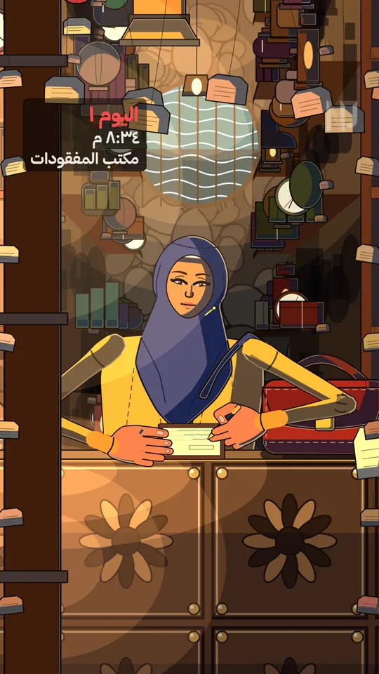

سهىSuha
الموظفة الجديدة. تجد حقيبة عليها اسمها.
من أينعائلة عمانية وأمها سواحيلية (السواحيلية: لغة وثقافة ساحل شرق أفريقيا)
سلسلة عربية متحركة
حقيبة وصلت مع الريح، وعليها اسم سهى

الفكرة
حقيبة باسمها، فُقدت في يوم لم يأتِ بعد
ريلز إنستغرام هو الأصل. كل رابط يفتح المنصة نفسها.
شاهد الريلز على إنستغرامسبع شخصيات من سبعة أماكن.

الموظفة الجديدة. تجد حقيبة عليها اسمها.
من أينعائلة عمانية وأمها سواحيلية (السواحيلية: لغة وثقافة ساحل شرق أفريقيا)
مفتشة مدينة لا يضيع فيها شيء.
من أينالسنغال (من شعب الولوف)
غواصة الميناء. تنتشل ما يأخذه البحر.
من أينكوريا، من جزيرة جيجو (جزيرة كورية)
ساعي المكتب. يحمل كل شيء إلى صاحبه.
من أينالفلبين
الزبون الدائم الذي لا يتأخر أبدا.
من أينفنلندا
يصعد إلى المكتب من فتحة الصرف في الأرض.
من أينجبال الأنديز، من شعب الأيمارا (شعب أصلي في الأنديز)
مدير المكتب. يضع سعرا لكل شيء.
من أينالهند، من غوجارات (ولاية في غرب الهند)
الشخصيات خيالية، وأصل كل شخصية هو جذور عائلتها.
Story-Wrap أداة مجانية ومفتوحة المصدر (MIT) لـ Claude Code، تنتج ريلز قصصية عربية متحركة بشكل آلي: النص والصوت والمؤثرات والتركيب والنشر عبر الواجهات الرسمية. هذه السلسلة أول عمل صُنع بها. عن الأداة أو Story-Wrap على GitHub.
git clone https://github.com/NJ-Burrito/Story-Wrap && cd Story-Wrap
uv run tools/daily.py --help